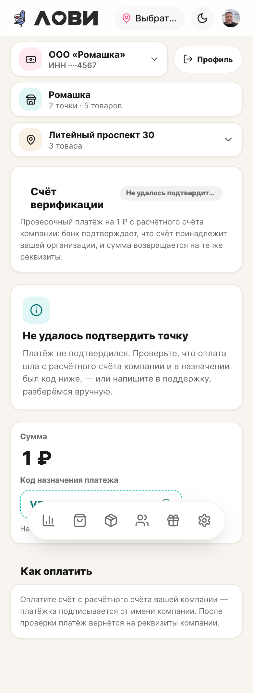

Снято по базе (только чтение) во время твоего прогона.
| № | Заявка | Статус | Причина отказа |
|---|---|---|---|
| 31 | Пекарня «Пышка» (вы) | отклонена | «проверка уведом…» |
| 30 | Продукты у дома (тестовый) | ждёт апрува | — |
| 29 | Пекарня «Пышка» (вы) | отклонена | «переподайте за…» |
| 28 | Пекарня «Пышечная» (вы) | отклонена | «привет» |
/cabinet/msp/payment: код вида VER-<id>-<suffix>, сумма 1 ₽, кнопка «Я оплатил, проверьте». Проверено — экран живой, ошибок нет.Отклонённая заявка остаётся закрытой — для повторного прохода нужна новая подача (данные подставляются из прошлой).
